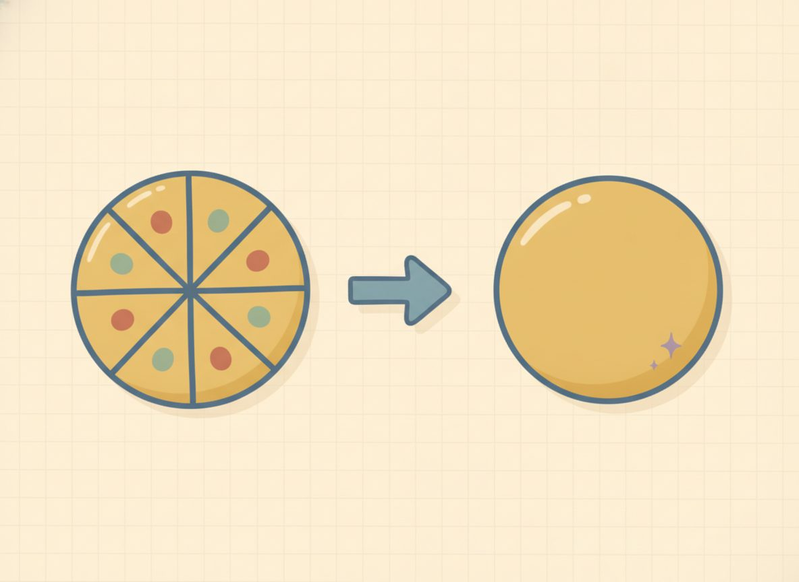

Equations with fractions
Now put those two fraction skills to work. An equation with a fraction in it can look intimidating, but every one turns back into the whole-number equations you already solve. There are two ways in, and you've just refreshed both: multiply by a reciprocal when a single fraction multiplies x, or clear the fractions when they're scattered through the equation.

Here are the two strategies, each turning a fraction equation into a plain one.
Worked example
Solve for x: x/2 + x/3 = 5.
(1) Single fraction coefficient → multiply by the reciprocal (Refresher B). When one fraction multiplies x, multiply both sides by its reciprocal so the coefficient goes to one: $$\begin{aligned} &\frac23 x=6 \\ &\xrightarrow{\,\times \frac32\,}\; x=9 \\ &\text{Check: } \frac23(9)=6 \end{aligned}$$
(2) Fractions scattered in the equation → clear them by multiplying every term on both sides by a common denominator. This turns a fraction equation into a clean whole-number one, with the common denominator coming from Refresher A: $$\begin{aligned} &\frac{x}{2}+\frac{x}{3}=5 \\ &\xrightarrow{\,\times 6\text{ (the LCM)}\,}\; 6\cdot\frac{x}{2}+6\cdot\frac{x}{3}=6\cdot 5 \\ &\Rightarrow\; 3x+2x=30 \\ &\Rightarrow\; 5x=30 \\ &\Rightarrow\; x=6 \end{aligned}$$ $$\text{Check: } \frac{6}{2}+\frac{6}{3}=3+2=5$$ The one thing to hold onto: every term gets multiplied, including the right side. It's the flyers idea again. The ×6 has to reach everyone, or the scale stops balancing.
Worked example
2.6.w1 Reciprocal method: $$\begin{aligned} &\frac23 x=6 \\ &\xrightarrow{\times \frac32} x=9 \\ &\text{Check: } \frac23(9)=6 \end{aligned}$$
2.6.w2 Clear-the-fractions method: $$\begin{aligned} &\frac{x}{2}+\frac{x}{3}=5 \\ &\xrightarrow{\times 6} 3x+2x=30 \\ &\Rightarrow 5x=30 \\ &\Rightarrow x=6 \\ &\text{Check: } 3+2=5 \end{aligned}$$
2.6.w3 Reciprocal with a bigger numerator: $$\begin{aligned} &\frac34 x=9 \\ &\xrightarrow{\times \frac43} x=12 \\ &\text{Check: } \frac34(12)=9 \end{aligned}$$
2.6.w4 An answer that's itself a fraction (a fraction is a perfectly good solution): $$\begin{aligned} &\frac23 x=5 \\ &\xrightarrow{\times \frac32} x=\frac{15}{2} \\ &\text{Check: } \frac23\cdot\frac{15}{2}=\frac{30}{6}=5 \end{aligned}$$ Don't round 15/2 to 7 or 8. An exact fraction is the answer, the same way zero was a fine answer back in Lesson 2.1. The check confirms it: two-thirds of 15/2 is 30/6, which is 5.
Here's a clean reciprocal case to get the method moving before the practice mixes types: solve (3/4)x = 6 by multiplying both sides by 4/3, giving x = 8, and check that (3/4)(8) = 6. Just the one move.
A slip to watch for now that you've solved a few cleanly: when you clear fractions, the multiplier has to hit every term, including any plain constant and the right side. Forgetting one is the usual error. And the adding-across mistake from Refresher A can creep back, turning x/2 + x/3 into x/5. The fix is the same, since halves and thirds are different-sized pieces and must be renamed before they combine.
Check yourself
- 2.6.c1 Solve (2/5)x = 8 two ways, by reciprocal and by multiplying through by 5, and confirm they agree. (Reciprocal: multiply by 5/2 to get x = 20. Clearing: multiply both sides by 5 to get 2x = 40, so x = 20. Both give 20; check (2/5)(20) = 8.)
- 2.6.c2 In x/2 + x/4 = 6, what number clears both fractions, and why that one? (The LCM of 2 and 4 is 4; multiplying every term by 4 gives 2x + x = 24, so 3x = 24 and x = 8. Check: 8/2 + 8/4 = 4 + 2 = 6.)
- 2.6.c3 Why does multiplying by 3/2 make (2/3)x go to one times x? (Because 2/3 × 3/2 = 6/6 = 1, so the coefficient becomes 1 and 1x is just x.)
You can now solve an equation with fractions either by multiplying by the reciprocal of a single fraction coefficient or by clearing all the fractions with a common denominator, and you can trust a fractional answer as exact.
The practice below pulls both methods together, and two heads-up notes are built into it.
Reciprocal method (single fraction coefficient):
Reveal answerHide to problem 1
10Reveal answerHide to problem 2
12Reveal answerHide to problem 3
15Reveal answerHide to problem 4
4Clear the fractions (common denominator):
Reveal answerHide to problem 5
8Reveal answerHide to problem 6
6Reveal answerHide to problem 7
10Reveal answerHide to problem 8
12Mixed (fraction coefficient with a constant):
Reveal answerHide to problem 9
9Reveal answerHide to problem 10
8Fractional answer (the solution is itself a fraction, state it exactly):
Reveal answerHide to problem 11
15/2Substitution spot-checks: #5: 8/2+8/4=4+2=6. #7: 10/2-10/5=5-2=3. #8: 12/4+12/2=3+6=9. #9: (2/3)(9)+1=6+1=7. #11: (2/5)(15/2)=30/10=3 — a fraction is a fine solution.
You now have one reliable habit for every linear equation: do the same inverse move to both sides until x is alone, then substitute back to check. The procedure doesn't change from one-step to two-step to both-sides to fractions. Only the number of moves does. Tidy each side first (clear fractions, distribute, combine like terms), gather the variable terms onto one side and the constants onto the other, make the coefficient go to one, and check in the original. And if the variable goes to zero along the way, read what's left: a true statement means all real numbers, a false one means no solution.
Two things are worth deliberately keeping fresh as you go on. Slip a negative-answer problem back in now and then so your signed arithmetic stays sharp, and re-run a distributing-a-negative problem inside a longer solve once in a while, since that's the move most likely to relapse.